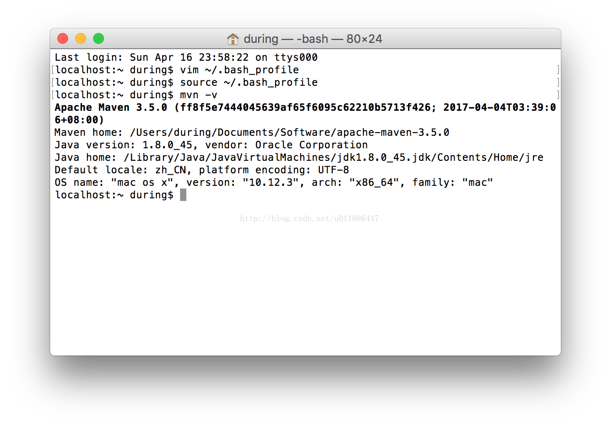
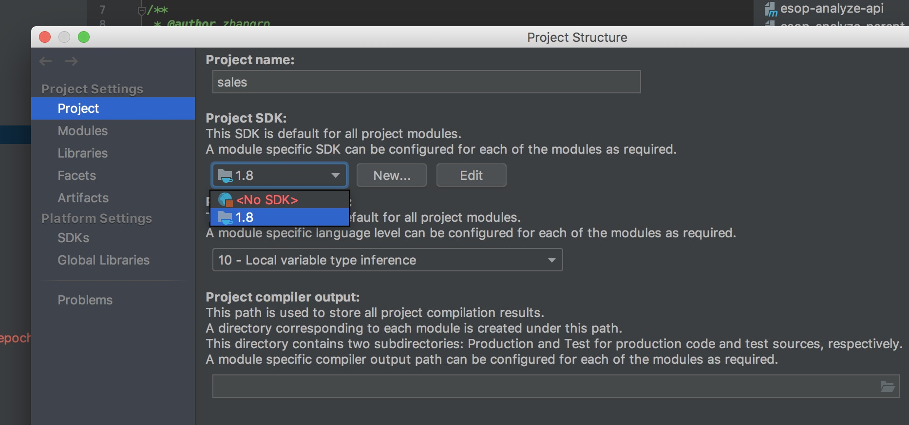
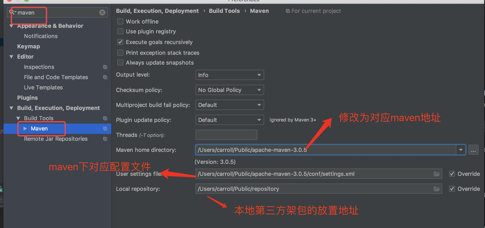
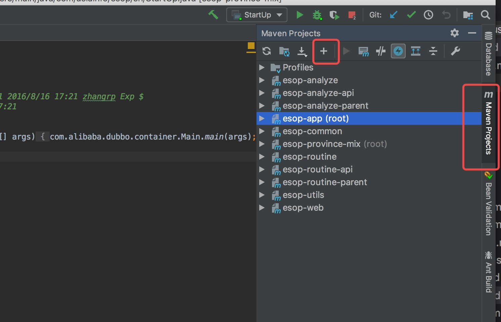
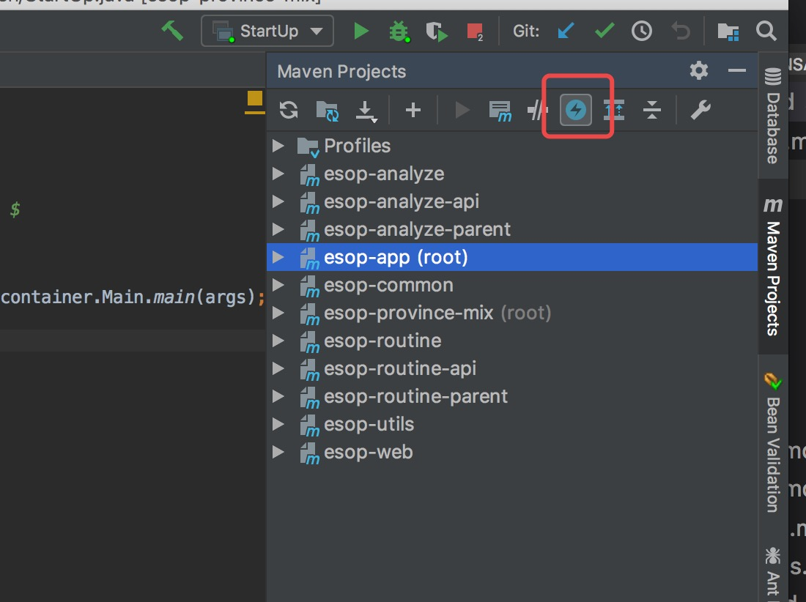
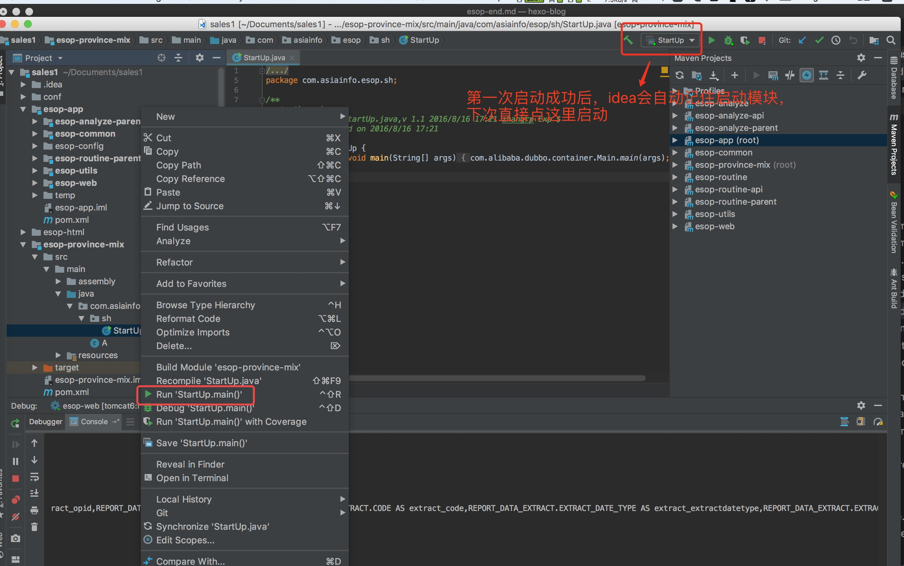
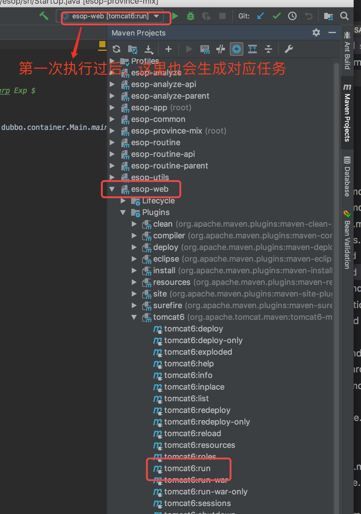
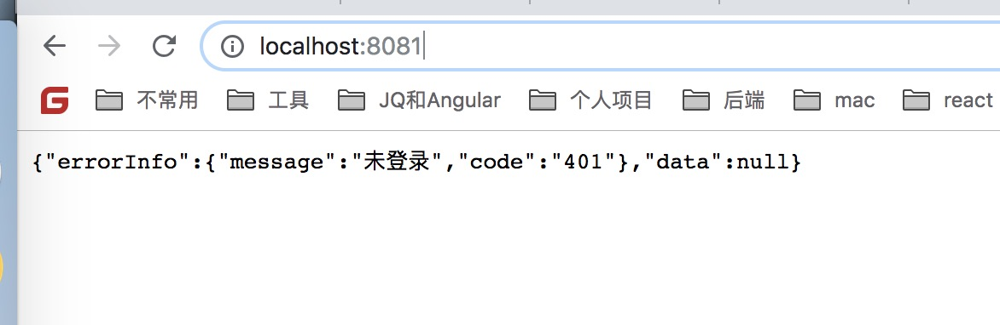

esop项目搭建
2018-09-30
销售管理系统（Esop）是以zookeeper为注册中心，dubbo为RPC通信框架，语言层面使用的Spring框架。通过maven管理架包。编辑器为IntelliJ IDEA。
搭建java环境
window环境下，参考这个链接，Java 开发环境配置，JDK必须下载1.8版本
安装maven
mac版本
- 下载安装包
从官网下载，https://maven.apache.org/download.cgi，Maven必须下载3.0.5版本
- 配置 Maven 环境变量
打开终端，输入vim ~/.bash_profile
输入Maven环境变量1
2
3
4# 请注意解压Maven的路径。只要修改第一个export的地址，第二个export不需要修改。
export M2_HOME="/Users/during/Documents/Software/apache-maven-3.5.0"
export PATH="$M2_HOME/bin:$PATH"
检测JAVA_HOME是否配置成功
1 | echo $JAVA_HOME |
使JAVA_HOME环境变量生效
1 | source ~/.bash_profile |
查看maven是否安装成功
1 | mvn -v |

window版本
请参考这个链接，Windows环境下maven 安装与环境变量配置，大部分内容和mac相同了，除了环境变量配置方式不同。
安装zookeeper
mac版本
从此链接中安装，http://mirrors.hust.edu.cn/apache/zookeeper/stable/
到指定目录解压
1 | tar -zxvf zookeeper-3.4.10.tar.gz |
启动zookeeper
1 | cd zookeeper-3.4.10/bin |
停止zookeeper1
./bin/zkServer.sh stop
前台式启动zookeeper
./zkServer.sh start是后台式启动，不会有日志信息输入，而下面的方式可以输出日志。1
zkServer.sh start-foreground
通过IDEA下载项目
IDEA破解教程，IntelliJ IDEA 2018 破解过程详细步骤
打开IDEA，File -> NEW -> Project from Version Control -> Git。
输入URL：http://caicn@xxx/migu/sales.git，其中caicn为Git用户名地址，选择对应Directory，然后克隆。xxx为Gitlab IP地址。
克隆下来的项目默认应该是dev分支，如果是master分支，通过右下角Git的操作区，切换到dev分支。
配置JDK
File -> Project Structure，左边区域选中project，将默认选项改为安装的JDK。
。
配置Maven
IntelliJ IDEA -> Perferences，左边区域搜索maven，如下图，Local repository最好由同事拷贝给你。

将esop-app和esop-province-mix两个模块交由maven管理

点击右侧Maven Projects -> +，分别导入esop-app和esop-province-mix模块的pom.xml文件。
启动时关闭测试用例

启动服务
启动dubbo，dubbo需要先启动，后启动web项目。执行esop-province-mix下的main方法。

启动web项目，用tomcat管理web项目，达到热部署的目的。Maven Projects -> esop-web -> Plugins -> tomcat -> tomcat6:run。执行tomcat6:run，就可以启动项目了。

测试是否全部启动成功
打开浏览器，访问localhost:8081

可能出现问题
1.was cached in the local repository, resolution will not be reattempted until the update interval of nexus has elapsed or updates are forced -> [Help 1]
解决地址，Maven was cached in the local repository, resolution will not be reattempted until the update interv
2.Maven必须用3.0.5的版本，用高版本不兼容，https://www.oracle.com/technetwork/java/javase/downloads/jdk8-downloads-2133151.html。
3.JDK也必须是1.8的版本。
写作时间：
20180930